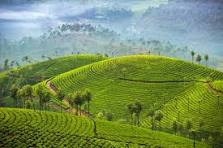
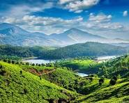
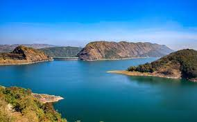
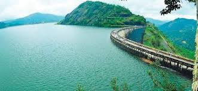
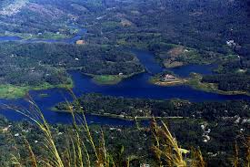
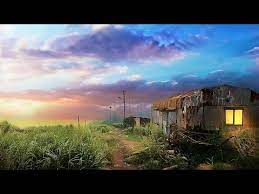

Munnar;
Munnar an enchanting hill station with enclosed calm of serenity and beauty draws thousands of tourists
from different parts of the world. This heavenly beautiful hill station of Kerala situated at an altitude
of about 1600 meter from the sea level was once the summer resort of British government in South India.
The colonial Bungalows in Munnar reflects the glorious past of the place.
The pleasant climate and the laid back attitude of the hills made it an ideal holiday spot. The cool
climate and the romantic ambiance of Munnar made it one of the most preferred honeymoon destination in South
India. Munnar lies at Idukki district in the confluence of three rivers Muthirapuzha, Nallathanni and
Kundala.



Idukki Arch Dam;Idukki Arch Dam constructed across the Kuravan and Kurathi hills is the
world's second and Asia's first arch dam. The Idukki Dam is situated near the Cheruthoni barrage and extents
to an altitude of 550 ft with a width of 650 ft. This huge wonderful dam is a unique, fascinating site in
Idukki.
There is an interesting story behind the origin of the dam. It is believed that Lord Rama cursed two natives
Koravan (man) and Korathi (woman) to stones for staring at Sita while she was bathing. They begged Rama for
Mercy as they never stayed separate. Lord Rama then blessed them that they will stay together for the years
to come.
It's the Arch Dam, which connects the two hillocks Kuravan Mala and Kurathi Mala together. The Natives in
here believes that its dam which reunites them. Kulamavu Dam, and Idukki Wildlife Sanctuary is located nearby
Idukki Arch Dam. There is an option for pedal boating in the dam.



Ilaveezhapoonchira;
Ilaveezhapoonchira situated atop Kudayathoor Mala is one of the most excellent places in Idukki district of
Kerala to witness the sunrise and sunset. Ilaveezhapoonchira literally means pond of flowers atop a hill where
no leaves fall. This is true as there is no trees around and only green grassland. This is a wonderful picnic
spot situated in the midst of the fabulous hillocks.
The velvet valleys of Ilaveezhapoonchira spreads across thousands of acres.The green landscape punctuated by
gigantic hills with enclosed calm and serenity is an ideal place to relax. This beautiful spot is surrounded
by three enchanting hillocks Mannakunnu, Kodayathoormala and Thonippara.

